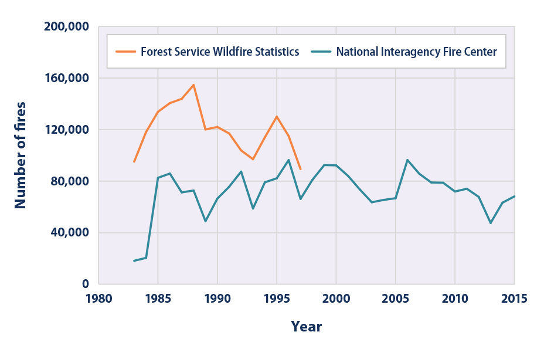
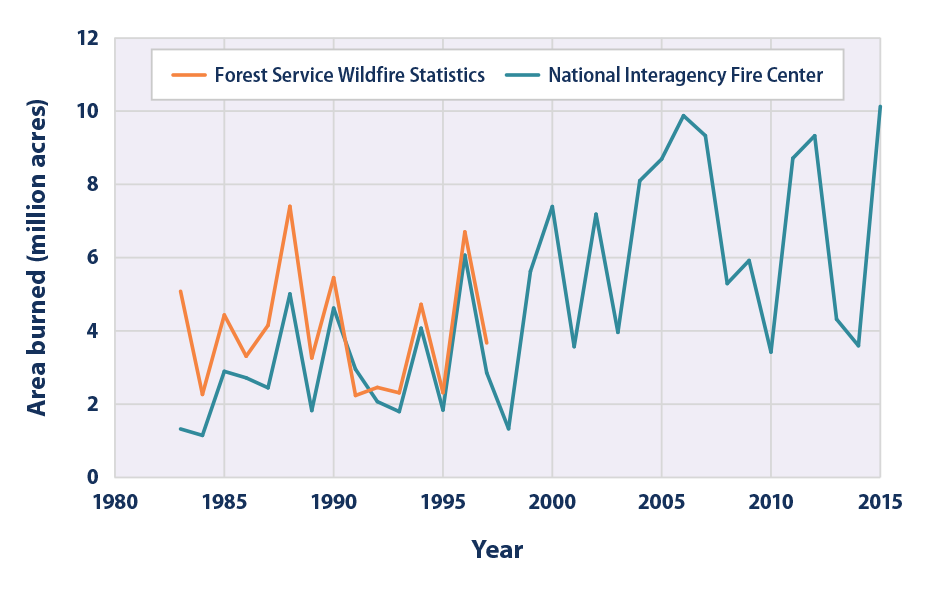
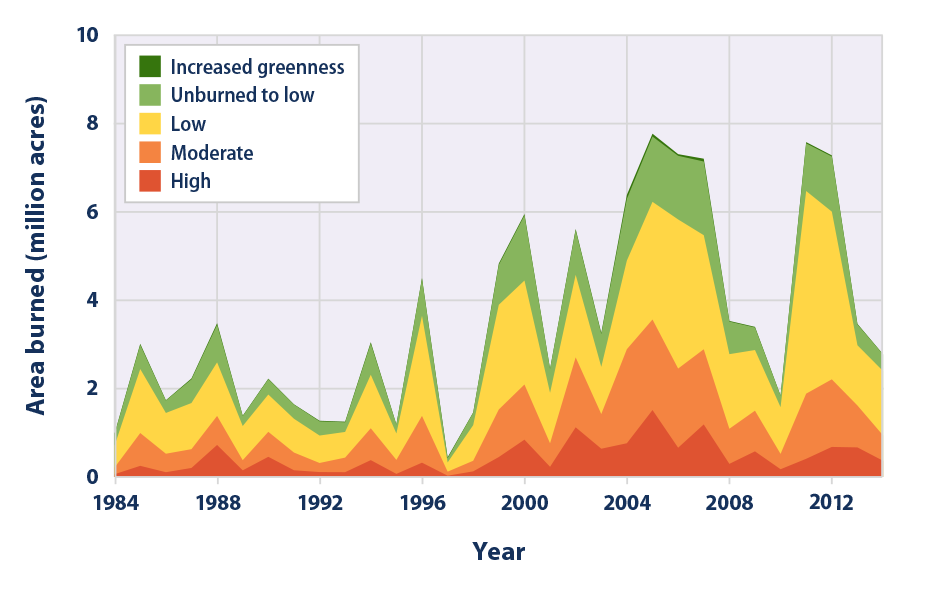

Climate Change Indicators: Wildfires
This indicator tracks the frequency, extent, and severity of wildfires in the United States.
- 
This figure shows the total number of wildfires per year from 1983 to 2015. These totals include all reported wildfires, which can be as small as just a few acres. The two lines represent two different reporting systems; though the Forest Service stopped collecting statistics (orange line) in 1997 and will not update them, those statistics are shown here for comparison.
Data source: NIFC, 2016;13 USDA Forest Service, 201414
Web update: April 2016 - 
This figure shows annual wildfire-burned area (in millions of acres) from 1983 to 2015. The two lines represent two different reporting systems; though the Forest Service stopped collecting statistics (orange line) in 1997 and is not planning to update them, those statistics are shown here for comparison.
Data source: NIFC, 2016;15 Short, 201516
Web update: August 2016 - 
This figure shows the distribution of acreage burned by large wildfires, based on the level of damage caused to the landscape–a measure of wildfire severity. Large wildfires are defined as fires with an area larger than 1,000 acres in the western United States and 500 acres in the eastern United States. The total acreage shown in Figure 3 is slightly less than the total in Figure 2 because Figure 3 is limited to large fires and because a few areas did not have sufficient satellite imagery to allow damage to be assessed.
Data source: MTBS, 201617
Web update: August 2016 -

This map shows the average number of acres burned in each state per year as a proportion of that state’s total land area. Darker-shaded states have the largest proportion of acreage burned. Click each state to reveal the data. For reference, there are 640 acres in a square mile; therefore, an average burned area of 6.4 acres per square mile would mean that fires burned 1 percent of a state’s total land area. A few states did not have any fires that were large enough to be included in this analysis.
Data source: MTBS, 201618
Web update: August 2016 -
This map shows how the number of acres burned in each state as a proportion of that state’s total land area has changed over time, based on a simple comparison between the first half of the available years (1984–1999) and the second half (2000–2014). Click each state to reveal the data. For reference, there are 640 acres in a square mile; therefore, a change of 6.4 acres per square mile would mean that burned area increased by 1 percent of a state’s total land area. A few states did not have any fires that were large enough to be included in this analysis.
Data source: MTBS, 201619
Web update: August 2016
Key Points
- Since 1983, the National Interagency Fire Center has documented an average of 72,000 wildfires per year (see Figure 1). Compiled data from the Forest Service suggest that the actual total may be even higher for the first few years of nationwide data collection that can be compared. The data do not show an obvious trend during this time.
- The extent of area burned by wildfires each year appears to have increased since the 1980s. According to National Interagency Fire Center data, of the 10 years with the largest acreage burned, nine have occurred since 2000, including the peak year in 2015 (see Figure 2). This period coincides with many of the warmest years on record nationwide (see the U.S. and Global Temperature indicator).
- The late 1990s were a period of transition in certain climate cycles that tend to shift every few decades.10 This shift—combined with other ongoing changes in temperature, drought, and snowmelt—may have contributed to warmer, drier conditions that have fueled wildfires in parts of the western United States.11,12
- Of the total area burned each year from 1984 to 2014, the proportion of burned land suffering severe damage has ranged from 5 to 21 percent (see Figure 3).
- Land area burned by wildfires varies by state. Fires burn more land in the western United States than in the East, and parts of the West and Southwest show the largest increase in burned acreage between the first half of the record (1984–1999) and the second half (2000–2014) (see Figures 4 and 5).
Background
Together, forests, shrubland, and grassland cover more than half of the land area in the United States.1 These ecosystems are important resources, both environmentally and economically. Although wildfires occur naturally and play a long-term role in the health of these ecosystems, climate change threatens to increase the frequency, extent, and severity of fires through increased temperatures and drought (see the U.S. and Global Temperature and Drought indicators). Earlier spring melting and reduced snowpack (see the Snowpack indicator) result in decreased water availability during hot summer conditions, which in turn contributes to an increased wildfire risk, allowing fires to start more easily and burn hotter. An increase in the length of the fire season has been observed in some areas.2 In addition to climate change, other factors—like the spread of insects, land use, fuel availability, and management practices, including fire suppression—play an important role in wildfire frequency and intensity. All of these factors influencing wildfires vary greatly by region and over time, as do variations in precipitation, wind, temperature, vegetation types, and landscape conditions. Therefore, understanding changes in fire characteristics requires long-term records, a regional perspective, and consideration of many factors.3
Wildfires have the potential to harm property, livelihoods, and human health, particularly as population centers expand into wild land areas. The recreation and timber industries depend on healthy forests, and wildfire smoke has been directly linked to poor air quality and illness, even in communities far downwind.4,5 Fire-related threats are increasing, especially as more people live in and around forests, grasslands, and other natural areas.6 The United States spends more than $1 billion every year to fight wildfires and spent more than $2 billion in 2015.7 These efforts have resulted in the deaths of hundreds of firefighters since 1910.8
Beyond the human impact, wildfires also affect the Earth’s climate. Forests in particular store large amounts of carbon. When they burn, they release carbon dioxide into the atmosphere, which in turn contributes to climate change.
About the Indicator
This indicator defines wildfires as “unplanned, unwanted wildland fire[s]” in forests, shrubland, and grassland, where “the objective is to put the fire out.”9 This indicator tracks three aspects of wildfires over time: the total number of fires (frequency), the total land area burned (extent), and the degree of damage that fires cause to the landscape (severity). The total area and total number of fires are tracked by the National Interagency Fire Center, which compiles reports from local, state, and federal agencies that are involved in fighting wildfires. The U.S. Forest Service tracked similar data using a different reporting system until 1997. Those data have been added to this indicator for comparison. Wildfire severity is measured by comparing the “greenness” of satellite images taken before and after a fire to classify how severely the land has been burned. Burn severity provides an indication of the ecological damage and how long the effects of wildfires are likely to last.
Although some nationwide fire data have been collected since the early 1900s, this indicator starts in 1983 (Figures 1 and 2) and 1984 (Figures 3, 4, and 5), when nationwide data collection became more complete and standardized.
Indicator Notes
Many environmental impacts associated with climate change can affect wildfire frequency, extent, or severity, including changes in temperature, precipitation, and drought. Human activities and land management practices also affect wildfire activity, and preferred practices in wildfire management have evolved over time, from older policies that favored complete wildfire prevention to more recent policies of wildfire suppression and controlled burns. While this indicator is limited to “wildland” fires, it includes fires that encroach on—or perhaps started in—developed areas. Increased development in previously wild lands could also influence trends in wildfire frequency and extent. The total number of fires may also vary due to reporting irregularities, as fires that split or merge together across jurisdictional lines may be counted differently.
Along with the influence of ongoing climate change, wildfire patterns can be influenced by natural climate cycles that tend to shift every few decades. Thus, the approximately 30 years of data shown here may not be enough to draw conclusions about long-term trends. While a longer record would be ideal, data from before 1983 are not consistent enough nationally to be included in this indicator.
Data Sources
The full set of wildfire frequency and burned acreage data in Figures 1 and 2 comes from the National Interagency Fire Center, which compiles wildfire reports sent from local, state, and federal entities that are involved in fighting fires. These data are available online at: www.nifc.gov/fireInfo/fireInfo_statistics.html. Additional data were provided by the U.S. Forest Service based on a different set of records, referred to as Smokey Bear Reports. Burn severity data and state-by-state acreage totals in Figures 3, 4, and 5 come from a multi-agency project called Monitoring Trends in Burn Severity, which maintains a database of wildfire events across the United States. These data are publicly available at: www.mtbs.gov/data/search.html.
Technical Documentation
References
1 MRLC (Multi-Resolution Land Characteristics) Consortium. 2015. National Land Cover Database 2011 (NLCD 2011) product statistics. www.mrlc.gov/nlcd11_stat.php.
2 Westerling, A.L. 2016. Increasing western U.S. forest wildfire activity: Sensitivity to changes in the timing of spring. Phil. Trans. R. Soc. B. 371:20150178.
3 Stein, S.M., J. Menakis, M.A. Carr, S.J. Comas, S.I. Stewart, H. Cleveland, L. Bramwell, and V.C. Radeloff. 2013. Wildfire, wildlands, and people: Understanding and preparing for wildfire in the wildland-urban interface. Gen. Tech. Rep. RMRS-GTR-299. Fort Collins, CO: U.S. Department of Agriculture, Forest Service, Rocky Mountain Research Station. www.fs.fed.us/openspace/fote/wildfire-report.html.
4 Johnston, F.H., S.B. Henderson, Y. Chen, J.T. Randerson, M. Marlier, R.S. DeFries, P. Kinney, D. Bowman, and M. Brauer. 2012. Estimated global mortality attributable to smoke from landscape fires. Environ. Health Persp. 120(5):695–701. www.ncbi.nlm.nih.gov/pmc/articles/PMC3346787.
5 Fann, N., T. Brennan, P. Dolwick, J.L. Gamble, V. Ilacqua, L. Kolb, C.G. Nolte, T.L. Spero, and L. Ziska. 2016. Chapter 3: Air quality impacts. The impacts of climate change on human health in the United States: A scientific assessment. U.S. Global Change Research Program. https://health2016.globalchange.gov.
6 National Association of State Foresters. 2009. Quadrennial fire review. www.nifc.gov/policies/pol_ref_QFR.html.
7 NIFC (National Interagency Fire Center). 2016. Historical wildland fire information: Federal firefighting costs: Suppression only (1985–2015). www.nifc.gov/fireInfo/fireInfo_documents/SuppCosts.pdf.
8 NIFC (National Interagency Fire Center). 2015. Wildland fire fatalities by year (1910–2014). www.nifc.gov/safety/safety_documents/Fatalities-by-Year.pdf.
9 NWCG (National Wildfire Coordinating Group). 2015. Glossary of wildland fire terminology. Updated October 2015. www.nwcg.gov/glossary-of-wildland-fire-terminology.
10 For example, see: Peterson, W.T., and F.B. Schwing. 2003. A new climate regime in northeast Pacific ecosystems. Geophys. Res. Lett. 30(17).
11 Kitzberger, T., P.M. Brown, E.K. Heyerdahl, T.W. Swetnam, and T.T. Veblen. 2007. Contingent Pacific–Atlantic Ocean influence on multicentury wildfire synchrony over western North America. P. Natl. Acad. Sci. USA 104(2):543–548.
12 Westerling, A.L. 2016. Increasing western U.S. forest wildfire activity: Sensitivity to changes in the timing of spring. Phil. Trans. R. Soc. B. 371:20150178.
13 NIFC (National Interagency Fire Center). 2016. Total wildland fires and acres (1960–2015). Accessed March 2016. www.nifc.gov/fireInfo/fireInfo_stats_totalFires.html.
14 USDA (U.S. Department of Agriculture) Forest Service. 2014. 1991–1997 wildland fire statistics. Prepared by USDA Forest Service, State and Private Forestry, Fire and Aviation Management staff, and supplemented with historical records provided by Forest Service staff, April 2014.
15 NIFC (National Interagency Fire Center). 2016. Total wildland fires and acres (1960–2015). Accessed March 2016. www.nifc.gov/fireInfo/fireInfo_stats_totalFires.html.
16 Short, K.C. 2015. Sources and implications of bias and uncertainty in a century of U.S. wildfire activity data. Int. J. Wildland Fire 24(7):883–891.
17 MTBS (Monitoring Trends in Burn Severity). 2016. MTBS data summaries. www.mtbs.gov/data/search.html.
18 MTBS (Monitoring Trends in Burn Severity). 2016. MTBS data summaries. www.mtbs.gov/data/search.html.
19 MTBS (Monitoring Trends in Burn Severity). 2016. MTBS data summaries. www.mtbs.gov/data/search.html.